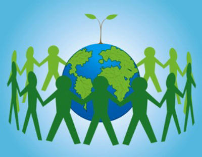
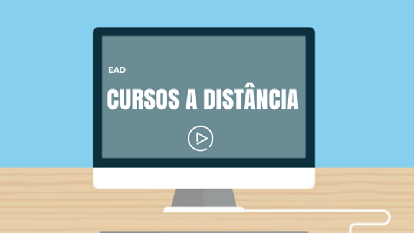

Ensino a Distancia de Sociedade e Sustentabilidade
Aprenda sobre sociedade e sustentabilidade no nosso curso EAD

A disciplina é baseada no conhecimento da formação da sociedade, como a sociedade se comporta hoje em dia e como ela se sustenta, a conscientização sobre os problemas sociais, etnicos e raciais.
A nossa disciplina em EAD permite o aluno ter contato com a disciplina na hora que achar conveniente e podendo reve-la varias vezes.
O conceito se baseia no de uma socieade sustentavel que consegue suprir suas necessidades de produção, consumo e crescimento sem comprometer as bases para o desenvolvimento das futuras gerações, tendo como maior dificuldade o fator economico pois empresas geralmente usam demasiados poluentes para poupar custos, oque afeta o meio ambiente.
O Curso:
O Curso é um EAD, ou seja, um Ension a Distancia, sendo assim o aluno pode ver e rever a aula e a matéria quando achar necessario, o curso prepara e conscientiza o aluno sobre a sociedade e seus problemas, sustentabilidade em relação a gastos e lucros, oque pode servir de uma grande ajuda na vida futura daquele que escolheu o Curso.
| Disciplina | Carga Horaria |
|---|---|
| Desenho e Concept Art para Jogos | 80 Horas |
| Macroeconomia | 80 Horas |
| Matemática Aplicada | 80 Horas |
| Modelos de Negócios e Empreendedorismo | 80 Horas |
| Pensamento Crítico e Ética | 80 Horas |
